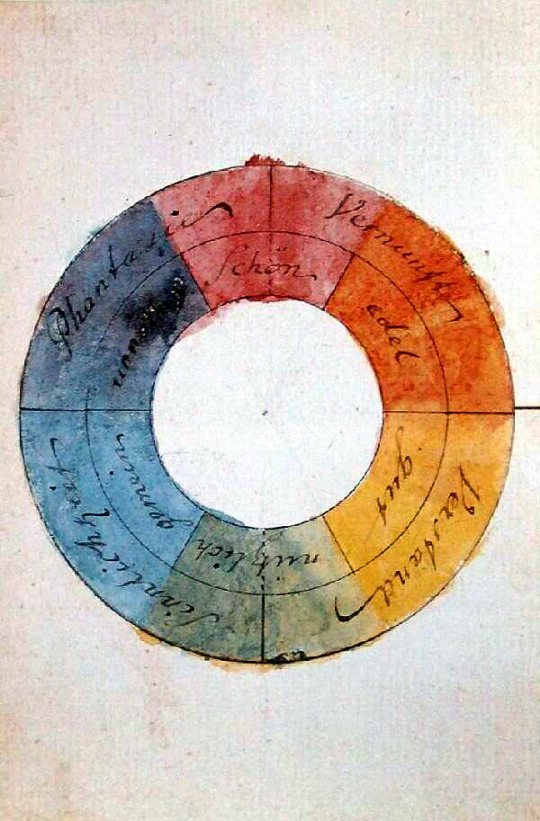

Goethes Farbenkreis für das Goetheanum
Zwölf Sektionen auf dem sinnlich-sittlichen Farbenkreis, jede mit dem kürzesten Argument aus Goethes Text – und je Farbe fünf Stufen mit je einer Aufgabe: die Erkennungsfarbe leuchtet in der natürlichen Buntheit von heute, die Tinte steht auf Papier, der Grund trägt Weiss, Pastell und Hauch sind der Gegenraum. Schwarz steht nie auf Farbe.
Der Kreis
Links Goethes eigene Skizze: das Aquarell von 1809, das die sechs Farben den Sphären Vernunft, Verstand, Sinnlichkeit und Phantasie zuordnet. Rechts die Übertragung: Purpur oben, wo sich beide Seiten in der Steigerung vereinigen; Grün unten, wo sie sich mischen; rechts die warme, links die kühle Seite. Der äussere Ring zeigt die zwölf Sektionen in gleichen Feldern, nach Farbton geordnet. Gelb ist selbstlos: es leuchtet und trägt keine Schrift; seine Tinte ist ein dunkles, sattes Gelb, kein Gold. Das Goetheanum-Blau und das Bühnengold sind Sonderidentitäten und stehen nicht im Kreis; keine Sektion liegt auf ihnen.

Die Leiter
Je Sektion fünf Stufen, von hell nach tief. Leuchten hat die Buntheit der heutigen Farben – Pigment, nicht Licht – und ist so hell, wie 3:1 auf Papier erlaubt. Die Tinte ist für Schrift auf Weiss gesetzt, der Grund trägt Weiss auch klein; bei den warmen Farben rücken beide zum Rot, damit kein Braun entsteht. Die Landwirtschaft behält ihr etabliertes Grün als Leuchten exakt. Gelb ist die Ausnahme: Es leuchtet ohne Kontrastpflicht; Tinte und Grund sind ein dunkles Gelb, so satt, wie der Gamut bei 5.5:1 und 4.6:1 erlaubt, und leicht zum Grün gerückt, damit es nicht braun wird. Pastell trägt keinen Text. Die Zahlen sind am Blatt gemessen.
Anwendungsfälle
Vier Stufen für die Werkzeuge im Alltag – Leuchten, Tinte, Grund, Hauch –, Pastell für die grosse Fläche. Zwei Regeln dahinter: Was Lesetext tragen muss, ist nie die Erkennungsfarbe. Und Schwarz steht nie auf Farbe – nur auf dem ganz zarten Hauch; auf Pastell steht Text auf einem Papierfeld.
| Stufe | Trägt | Anwendungsfälle | Regel |
|---|
Am Beispiel
Sektion wählen – die Stufen zeigen sich in ihren Anwendungen.
Titel der Sektion
Tagung · 14. bis 16. Mai · Goetheanum, Dornach
Sektion
Titel der Sektion
Freie Hochschule für Geisteswissenschaft
Forschung und Praxis im Gespräch
Der Kicker steht in der Tinte, im Lauftext bleibt ein Verweis in der Tinte lesbar – auch im Dunkelmodus.
Empfehlung
Fünf Stufen, vier im Alltag. Leuchten, Tinte, Grund und Hauch brauchen die Werkzeuge täglich; Pastell ist für die grosse Fläche. Der Charakter der Reihe ist der von heute: gedeckt-natürlich, Pigment statt Licht. Neu ist nur, dass jede Stufe eine Aufgabe hat und die Erkennungsfarbe keinen Lesetext mehr tragen muss.
Die Heilpädagogik. Ihr Leuchten ist ein warmes Orange wie heute; Tinte und Grund rücken zum Rot und werden Terracotta statt Braun – ein dunkles Orange ist immer Braun. Was man liest, ist tiefer als das, woran man die Sektion erkennt – bei allen zwölf.
Sonderidentitäten. Das Goetheanum-Blau und das Bühnengold stehen fest; keine Sektion liegt darauf, und keines von beiden steht im Kreis. Das dunkle Gelb der Pädagogik ist satt und grünlich, das Bühnengold gedeckt und rötlich – sie liegen auseinander. Das Rot der Bau-Administration ist intern und zählt nicht. Die Landwirtschaft, die einzige Sektion mit gelebter Farbidentität, behält ihr Grün exakt.
Wer trägt das Gelb. Vorgeschlagen ist die Pädagogik (Goethe: ‹die nächste Farbe am Licht›). Ebenso denkbar wären Jugend (‹heiter, munter›) oder Heilpädagogik (‹warm und behaglich›); der Vorschlag steht unter Veto.
Was das für die Tokens heisst. Aus drei Gestalten werden fünf: Leuchten, Tinte, Grund, Pastell, Hauch, je Theme. Basis wird zum Leuchten, Dunkel zum Grund, Hell zum Hauch; Tinte und Pastell kommen dazu.
Quelle. Goethe, Zur Farbenlehre (1810), Didaktischer Teil, sechste Abteilung, §§ 758–829. Bild. Goethe, Farbenkreis zur Symbolisierung des menschlichen Geistes- und Seelenlebens, 1809, Freies Deutsches Hochstift, Frankfurt; Wiedergabe über Wikimedia Commons, gemeinfrei. Werte. Gerechnet in OKLCH (tools/sek-modell.py, Daten in assets/sek-modell.js): Leuchten, Tinte und Grund an ihrer Grenze mit natürlicher Buntheit (warme Töne um 15° zum Rot gerückt), Hauch mit dem Rezept der heutigen Sektionsfarben, Pastell bei Helligkeit 0.94. Kontraste am gerenderten Blatt gemessen. Herleitung und Belegstellen: Sektionen auf Goethes Farbenkreis; Paletten zum Vergleich: Varianten.